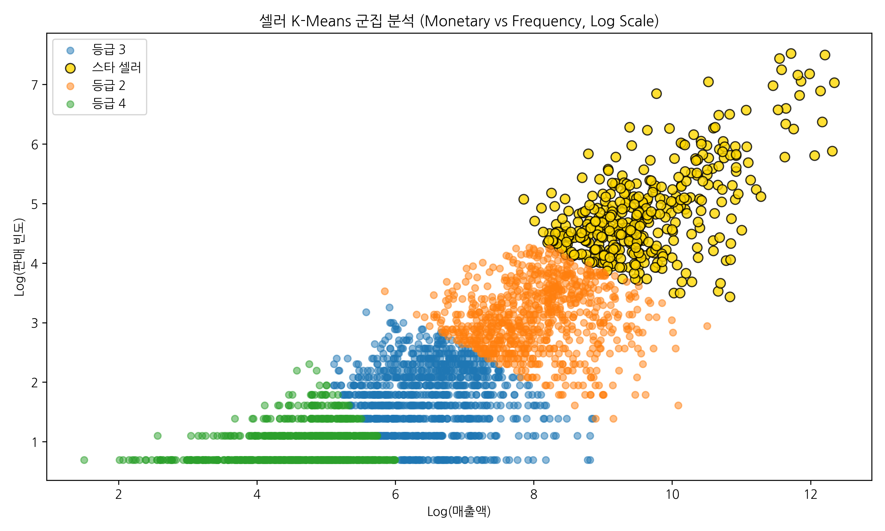
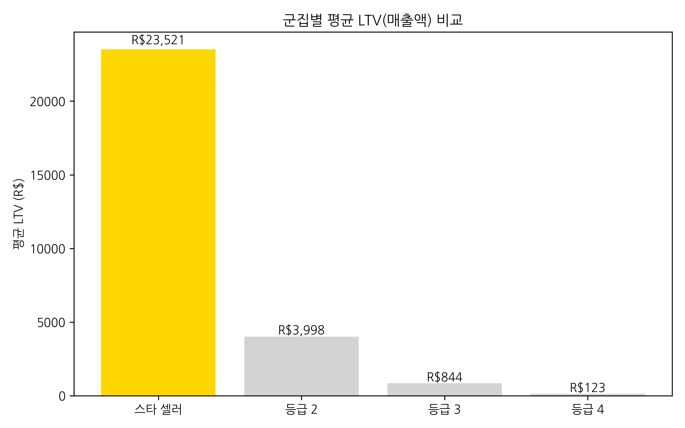
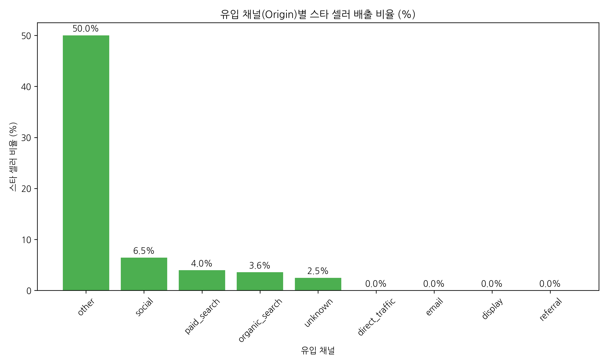
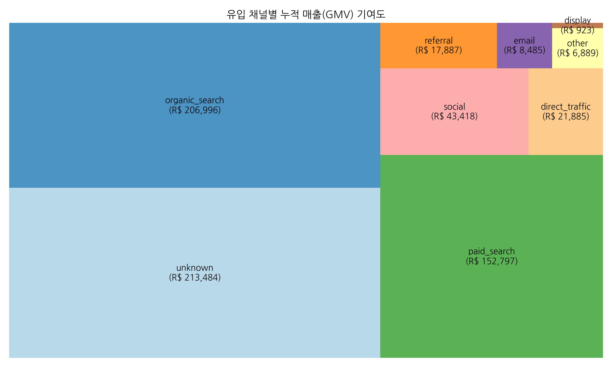
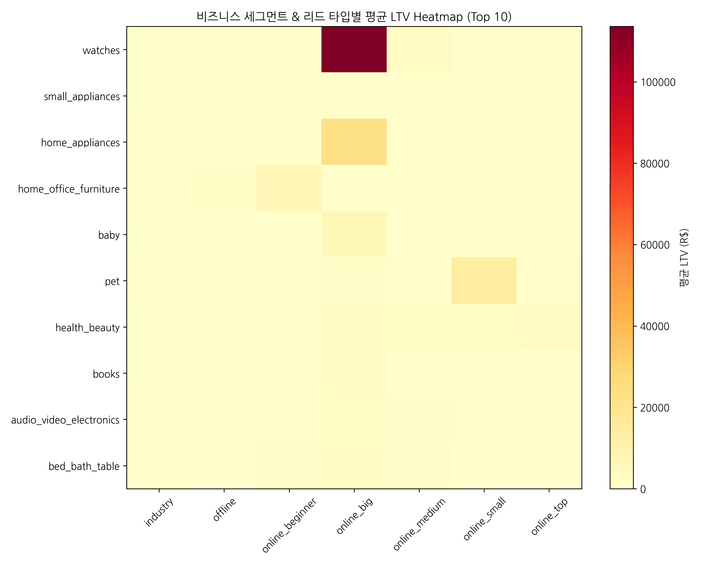
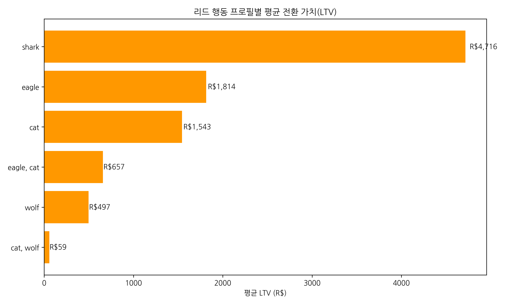
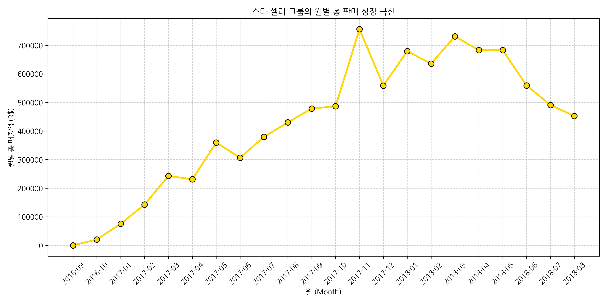

1. 스타 셀러 군집(Cluster) 식별

상위 10%의 '스타 셀러' 그룹은 압도적인 LTV 성과를 보입니다.
2. 군집별 평균 LTV 비교

우량 셀러 그룹의 가치는 일반 셀러 대비 약 8.5배 높습니다.
3. 유입 채널별 우량 셀러 배출 확률

Paid Search와 Social 채널이 가장 정교한 타겟팅 성과를 보입니다.
4. 채널별 총 매출(GMV) 기여도

UNKNOWN 채널의 볼륨은 크지만, 개별 품질은 Paid가 우세합니다.
5. 비즈니스 세그먼트별 성과 Heatmap

뷰티 및 시계 카테고리 셀러의 성장이 가장 두드러집니다.
6. 리드 프로필(Lead Type)별 가치

'online_big' 프로필을 가진 리드의 초기 전환 가치가 높습니다.
7. 스타 셀러 그룹의 시계열 성장 곡선

입점 3개월 차 이후부터 매출 격차가 기하급수적으로 벌어집니다.
💡 파트 4 최종 결론 및 전략 제안
1. 고가치 채널 집중: 단순 유입량이 아닌 '우량 셀러 배출률'이 높은 Paid Search에 예산을 우선 배정해야 합니다.
2. 타겟 프로필 고도화: 'online_big' 리드와 '뷰티/가전' 업종의 조합을 전략적 타겟으로 설정합니다.
3. 조기 온보딩 강화: 성장 곡선 분석 결과, 초기 3개월 관리가 장기 LTV를 결정짓는 핵심 골든 타임입니다.